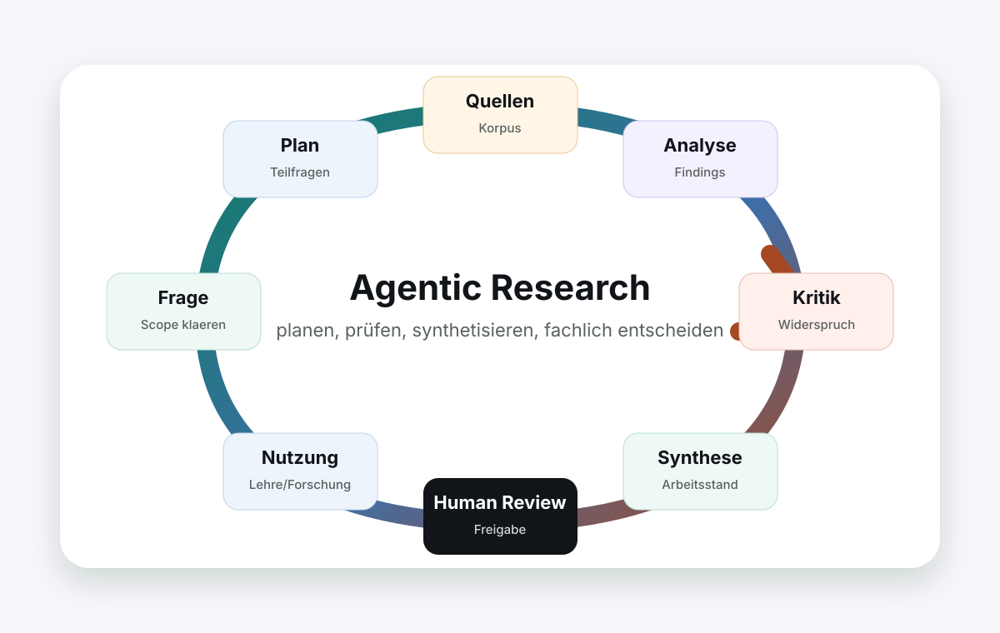

Vor dem Lauf
- Fragestellung, Kurskontext und Zielgruppe festlegen.
- Quellenkorpus, Suchachsen und Ausschlüsse eintragen.
- Ausgabeformate und Prüfkriterien auswählen.
- Startpunkt festlegen: manuell, vor Sitzung oder wiederkehrend.
Tag der KI-gestützten Lehre · 20. Mai 2026
Ein solches System besteht aus einem Arbeitsraum, einem Quellenkorpus, einem gespeicherten Rechercheauftrag, festen Ausgabeformaten und einer Prüfung. Die Automation wiederholt den Ablauf und schreibt Arbeitsstände zurück. Die fachliche Prüfung setzt den Verwendungsstatus.

Prinzip
Bauteile
Mindestbestandteile: Arbeitsraum, Quellenkorpus, Rechercheauftrag, Ausgabevorlagen, Laufprotokoll und Prüfliste.
Eingaben, Zwischenergebnisse und Entscheidungen liegen in getrennten Dateien.
Ein Vault, Kursordner oder Repository mit Quellen, Aufträgen, Arbeitsständen und Prüfung.
PDFs, Links, Datenbankexporte, Notizen, Transkripte oder Kursmaterialien mit klarer Grenze.
Thema, Kontext, Ausschlüsse, Suchachsen, gewünschte Tiefe und Stoppregeln.
Quellenkarte, Aussage-Evidenz-Matrix, Prüfnotiz, Recherche-Notiz oder offene Fragen.
Der Lauf liest Auftrag und Korpus, extrahiert Befunde und schreibt strukturierte Dateien.
Eine Person entscheidet: übernehmen, genauer lesen, beobachten, verwerfen oder neu beauftragen.
Einrichtung
Die Ordnerstruktur trennt Rohmaterial, Auftrag, Arbeitsstand und Prüfung.
Lege einen Ordner oder Vault an. Quellen, Aufträge, Arbeitsstände und Prüfnotizen liegen dort.
Lege fest, welche Dateien, Links oder Datenbanken zählen. Externe Ergänzungen erhalten eine eigene Markierung.
Schreibe Thema, Kontext, Suchachsen, Ausschlüsse, Prüfschritte und Ausgabeformat in eine Auftragsdatei.
Definiere, wie eine Quellenkarte, Prüfnotiz oder Recherche-Notiz aussehen soll.
Starte den Lauf manuell. Prüfe, ob Quellen, Befunde und offene Fragen getrennt ausgegeben werden.
Erst nach einem brauchbaren Testlauf wird ein Auslöser gesetzt: wöchentlich, vor einer Sitzung oder nach neuen Quellen.
Durchlauf
Das System liest Rechercheprofil, Quellenraum, Ausgabeformat und Prüfkriterien.
Die Fragestellung wird in Teilfragen, Begriffe, Perspektiven und Gegenpositionen zerlegt.
Der festgelegte Korpus wird durchsucht. Externe Ergänzungen werden als solche markiert.
Kernaussagen, Methoden, Begriffe, Beispiele und Aussagekandidaten werden getrennt erfasst.
Das System sucht Lücken, schwache Evidenz, Anbieterinteressen, Zitationsschleifen und Gegenargumente.
Die Ergebnisse werden zusammengeführt. Unsicherheiten, Quellenbezug und offene Punkte bleiben sichtbar.
Eine Person entscheidet, was übernommen, genauer gelesen, beobachtet, verworfen oder neu beauftragt wird.
Geprüfte Ergebnisse werden in Vault, Seminarplan, Materialsammlung oder Manuskript übernommen.
Vorteile
Nachvollziehbarer Rechercheweg.
Suchplan, Quellenliste, Fundstellenliste und Prüfnotiz.
Welche Quelle trägt welche Aussage?
Wiederholbare Aktualisierung.
Gespeicherter Auftrag, fester Korpus, gleiche Prüfkriterien.
Was ist neu, was wurde präzisiert, was bleibt offen?
Frühere Quellenkritik.
Eigener Kritiklauf mit Gegenpositionen, Primärquellencheck und Evidenzstatus.
Welche Aussage braucht weitere Lektüre?
Materialpflege mit Auslöser.
Wöchentlicher Lauf, Sitzungsvorbereitung oder Lauf nach neuen Quellen.
Welche Lehrnotiz oder Materialsammlung braucht ein Update?
Zwischenergebnisse
Der Auftrag legt fest, was recherchiert werden soll, welche Quellen zählen und was ausgeschlossen ist.
Artefakt: Rechercheauftrag
Prüfung
Eine Aussage bekommt den Status verwendbar, wenn Quelle, Grenze, Gegenposition und fachliche Entscheidung dokumentiert sind.
Lehre
Suchbegriffe, Korpusgrenzen und Quellenstatus werden explizit formuliert.
Zusammenfassung, Originalquelle und Gegenposition werden verglichen.
Aussagen werden mit Quelle, Evidenzgrenze und Unsicherheit verbunden.
Das System bereitet Recherche vor. Die fachliche Entscheidung bleibt menschlich.
Rechercheauftrag
Thema: [eigene Fragestellung]
Kontext: [Seminar / Forschungsprojekt / Lehrveranstaltung]
Korpus: [eigene PDFs, Notizen, Links, Datenbanken, Kursmaterialien]
Rhythmus: [einmalig / wöchentlich / vor jeder Sitzung]
Ausgabe: [Recherche-Notiz / Quellenkarte / Aussage-Evidenz-Matrix / offene Fragen]
Aufgabe:
1. Zerlege die Frage in Teilfragen und Suchachsen.
2. Nutze den angegebenen Korpus; markiere externe Ergänzungen.
3. Extrahiere Kernaussagen, Methoden, Begriffe, Beispiele und mögliche Aussagekandidaten.
4. Trenne Signal, Interpretation und Evidenz.
5. Suche Gegenpositionen, Lücken und methodische Unsicherheiten.
6. Vergib Quellenstatus, Evidenztyp und Relevanz.
7. Erstelle eine Prüfliste: übernehmen / genauer lesen / beobachten / verwerfen.
8. Schreibe den Arbeitsstand mit Quellenbezug zurück; setze den Status auf ungeprüft, bis die fachliche Prüfung erfolgt.Nutzbar wird der Lauf durch die geprüfte Ablage: Quelle, Befund, Grenze, Status und nächste Entscheidung bleiben zusammen.